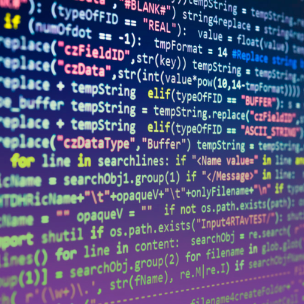

1. Programas de computador:
Nos programas de computador, os algoritmos são essenciais para que tudo funcione corretamente. Eles estão presentes em softwares como calculadoras, navegadores (como Chrome e Edge), jogos e aplicativos de mensagem. Cada ação realizada pelo usuário é processada por um algoritmo que garante que o programa responda da forma correta.
2. Redes sociais:
Nas redes sociais, os algoritmos decidem o que o usuário vê. Eles escolhem quais posts aparecem primeiro, quais vídeos serão recomendados e o que entra na timeline. Essas decisões são feitas com base no comportamento e nas preferências de cada pessoa, tornando o conteúdo mais personalizado.
3. Inteligência Artificial:
Na Inteligência Artificial, os algoritmos são fundamentais para permitir funções avançadas, como reconhecer rostos, traduzir textos, entender comandos e gerar respostas automáticas. A IA depende desses algoritmos para aprender, analisar dados e melhorar suas respostas ao longo do tempo.
4. Sistemas embarcados:
Em sistemas embarcados, como Arduino, placas eletrônicas, carros e eletrodomésticos inteligentes, os algoritmos controlam processos internos. Eles permitem acender LEDs, medir temperatura, movimentar motores e realizar diversas tarefas automáticas, garantindo que o sistema funcione exatamente como planejado.
5. Economia e bancos:
Na economia e nos bancos, os algoritmos são utilizados para calcular juros, garantir a segurança das transações e identificar possíveis fraudes. Eles analisam dados rapidamente, detectam padrões suspeitos e ajudam a manter o sistema financeiro mais seguro e eficiente.
6. Saúde:
Na área da saúde, algoritmos ajudam na análise de exames, organizam filas de atendimento e controlam o funcionamento de equipamentos médicos. Eles tornam o diagnóstico mais rápido, melhoram a eficiência dos hospitais e oferecem maior precisão nos procedimentos.